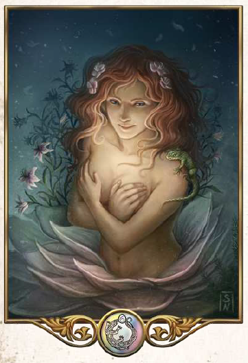

"Das Leben ist vielfältig, es ist steter Wandel. Klammere dich nicht an das Vergangene, sondern umarme den Neubeginn. Forme das Kommende, deine Zukunft, wie du es gern hättest."
Aspekte: Schöpfung, Erneuerung, Friedfertigkeit
Symbole/Wahrzeichen: Regenbogen
Heiliges Tier: Eidechse
Die junge Göttin wird Tsa genannt und sie wird als Herrin des Wandels, der Erneuerung, der Geburt und des Beginns verehrt. Das Eintönige und Festgefahrene ist ihr ein Graus, stattdessen liebt sie alles Neue. Dementsprechend sind ihre Priester oft lebensfroh, freiheitsliebend, kreativ und offen, was neue Ideen und Veränderungen angeht. Da Tsa alle Lebewesen gleichermaßen liebt und als äußerst friedfertig gilt, verzehren viele ihrer Geweihten kein Fleisch oder sind sogar erklärte Pazifisten. Kaum eine Kirche in Aventurien kennt so viele unterschiedliche, sich ständig verändernde Strömungen und Sekten wie die Tsakirche und nicht selten geraten die Geweihten aufgrund ungewöhnlicher oder revolutionärer Denkart in Konflikt mit anderen Kirchen oder der Obrigkeit. Nur weniger Menschen verehren Tsa daher mehr als die anderen Zwölfgötter, dennoch hat sie ihren festen Platz im Leben der Gläubigen, wird bei Geburten angerufen und häufig auch beim Beginn einer neuen Unterhaltung. Ihre Priester tragen Kleidung, die alle Farben des Regenbogens zeigt und nur selten verweilen sie lange im gleichen Tempel. Einen höchsten Vertreter und Haupttempel kennt die Kirche nicht.